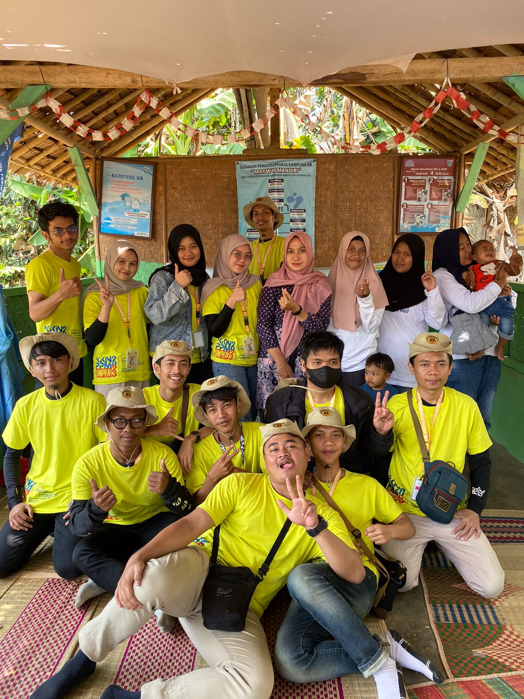

Layanan Kesehatan
Posyandu
POSYANDU adalah singkatan dari Pos Pelayanan Terpadu, sebuah program kesehatan dasar yang ditujukan untuk memantau dan meningkatkan kesehatan masyarakat, khususnya pada kelompok balita (anak usia 0-5 tahun) dan ibu hamil di Desa Cibeber
Lokasi
kp.palawija RT.004/RW.001
Jl. Mulawarman, RT 02, Kelurahan Mentawir


Ambulans
Alat transportasi pelayanan kesehatan di Desa Cibeber
Lokasi
DS. CIBEBER MANONJAYA. Desa/Kelurahan, : CIBEBER. Kecamatan/Kota (LN), : KEC. MANONJAYA.